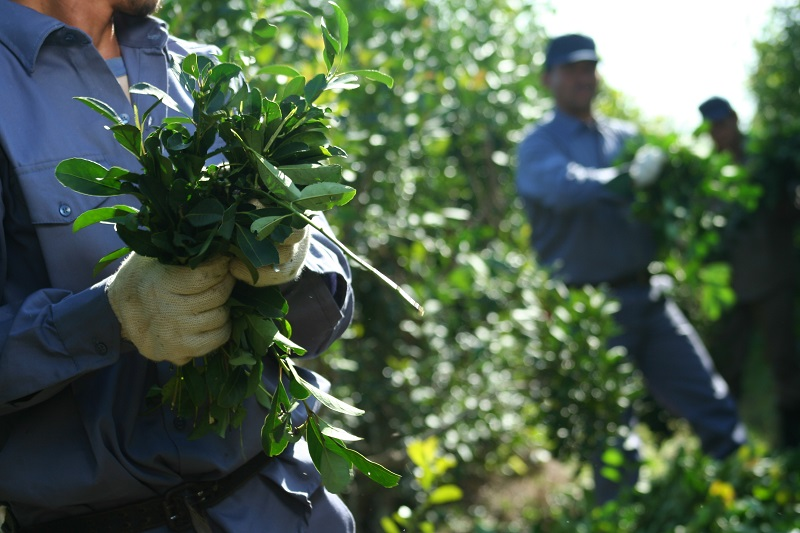

Historia del mate

Su origen se remonta a los pueblos guaraníes, que utilizaban las hojas del árbol como bebida, objeto de culto y moneda de cambio. Durante las largas travesías por la selva, los conquistadores españoles notaron que los guaraníes tenían mayor resistencia luego de tomar esta bebida sagrada.
Más tarde los jesuitas introdujeron el cultivo en las reducciones y contribuyeron a su difusión y comercialización, al punto tal de que la infusión se hizo conocida entonces como té de los jesuitas.
Produccion
La yerba mate, cuyo nombre científico es Ilex Paraguariensis es un árbol nativo de la Selva Paranaense, que en estado silvestre puede alcanzar una altura de entre 12 y 16 metros. Para facilitar su cosecha, las plantas son podadas hasta dos veces al año a una altura promedio de 2 metros.
El cultivo se localiza en Misiones y nordeste de Corrientes. En 2019 la producción de yerba mate molida y envasada para el mercado interno fue de casi 277.332.014 millones de kg.